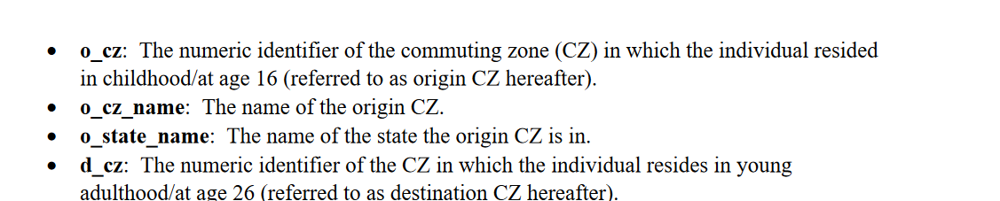
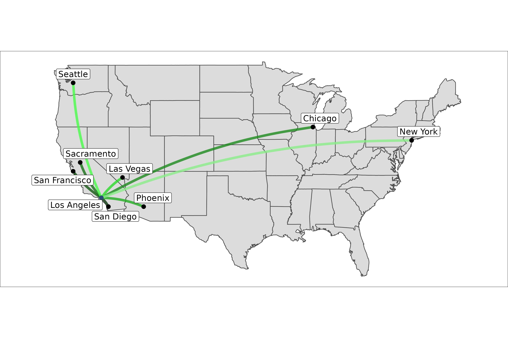
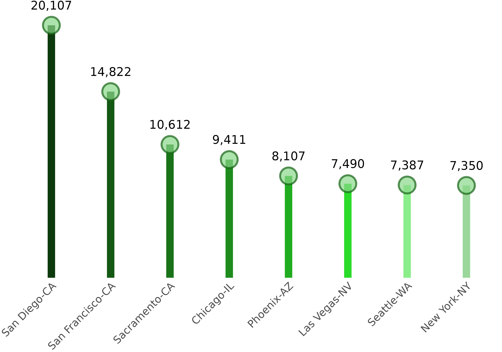
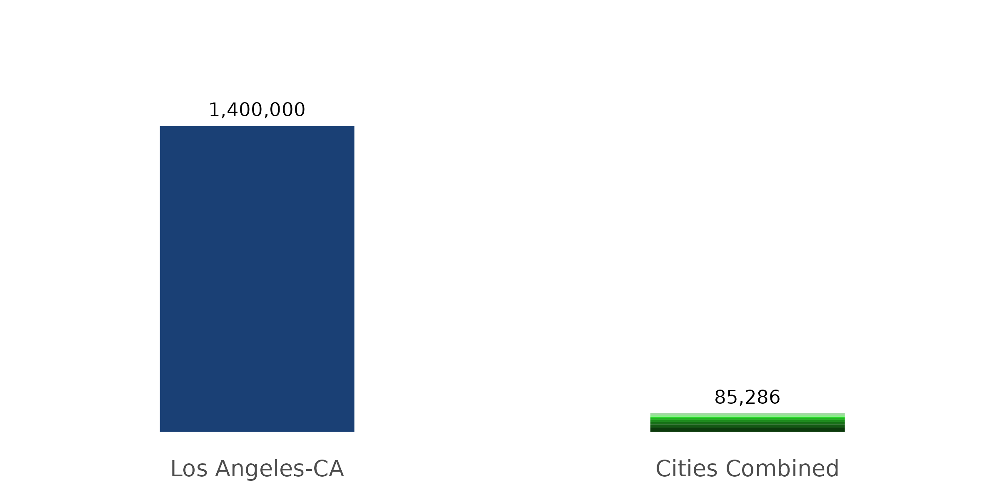
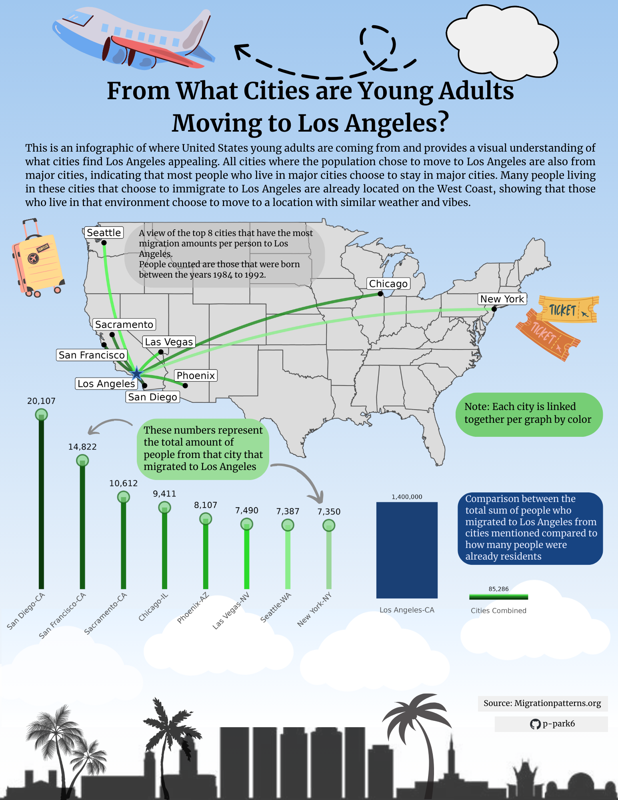

#load in libraries
library(tidyverse)
library(states)
library(maps)
library(patchwork)
library(scales)
library(showtext)
#load in data
od_pooled <- read_csv("data/od_pooled.csv") #dataset technically not 'separated' by a specific factor
# Most popular cities not separated by a certain factor
top_ten_pooled <- od_pooled %>% #using od_pooled
select(o_cz_name, o_state_name, d_cz_name, d_state_name, n, n_tot_o, pool) %>%#select columns we are interested in, helps get rid of repeats
filter(d_cz_name == "Los Angeles") %>%
distinct() %>% #gets rid of repeats in the dataset
slice_max(n, n = 10) %>% #find the top 10 most popular cities if applicable
left_join(state_info, by = "o_state_name") %>% #left join with state_info dataset to get regions of each state
mutate(n_formatted = number(n, big.mark = ",")) %>%
#add coordinates to dataset to be able to map correctly
mutate(long = c(-118, -117, -122, -121, -88, -121, -112, -115, -122, -74),
lat = c(34, 33, 37, 38, 42, 37, 33, 36.3, 47, 40.5),
la_long = c(-118.001, -118, -118, -118, -118, -118, -118, -118, -118, -118),
la_lat = c(34, 34, 34, 34, 34, 34, 34, 34, 34, 34)
)
#create new column that joins two columns and take out San Jose
top_ten_pooled <- top_ten_pooled %>%
unite("city_state", o_cz_name, state.abb, sep = "-", remove = FALSE)%>%
filter(city_state != "San Jose-CA")
#view wrangled dataset: uncomment to view dataset
#View(top_ten_pooled)Introduction
The intention of this blog post is to show the steps I took to create my final infographic piece. This blog will detail the steps I took to create each infographic piece. I’ll also detail how I did my preliminary analysis of the data to help shape the questions I asked. This dataset, found on migrationpatterns.org, details where young adults are from and where they choose to move to for their adult portion of their lives. This blog also serves to integrate key components of what makes an inforgraphic strong in each visualization. I also hopes that this helps inspire you to create your own infographic as well!
Questions (in question)
For this project, I was curious in looking into migration patterns with in the US. I wasn’t too sure what aspect I wanted to look at with this question, so I began looking at various datasets. Looking through the datasets that offer information on where people moved, I stumbled across a dataset detailing the migration patterns of young adults. Being a young adult myself, I am interested to look at where those moved when they were my age. From this, I decided to ask the overarching question: “From what cities are young Adults moving to Los Angeles?”. I’ll be answering this main question by asking a number of subset questions: 1. Where in the map are they coming from? (Map visualization) 2. About how many people from the cities are moving to Los Angeles? (Lollipop Visualization) 3. How does the total amount of these people that are moving from those cities compare to the population that are already living in Los Angeles? (bar graph visualization)
Datasets of interest
The dataset I am using is provided by the United States Census Bureau, which the data was then explored and wrangled by researchers from Harvard University and the US Census Bureau. This data was then used for a project hosted on migrationpatterns.org to look at where young people are moving to see the potential impacts on the labor market. Here, the user can filter by income, race, or all together. Users can also hover over each county and get additional information of the amount of people that is coming to or from that county. However, when using the web interface, understanding the information shown is not very intuitive. I wanted to find a way to show this information in a more streamlined way, in which, this infographic was born.
This dataset that I downloaded came with four datasets. One dataset includes information on where the individuals have moved to separated by type of race. The second dataset includes information of where the individuals have moved to separated by income. The third dataset gets the two (race and income) and separates it by where the individual falls. For example if the individual was Asian and was in middle class, that is how they would be classified in the dataset. The fourth dataset does not separate the data by a certain factor and only states where the individual is from and where they ended up.
Data Exploration (or what’s important about this dataset?)
Before starting this project, I did a good amount of data exploration to understand what the data meant and what each column was representing. This dataset came with a metadata sheet that helped me understand what each column heading meant. However, the metadata was written in such a complex manner that it took me a couple of weeks to understand what it all meant.

Shown here is a snippit of what the metadata looks like. After a couple of readings through the metadata and doing my own research, I realized what each column header stood for in the datasets and how to use each column to accurately show the numbers.
Data Wrangling (basically shaping the data)
Not much wrangling was done for this project as most of the data process was done by the researchers end. I did, however, had to add other datasets to get the information I needed in order to create my perfect infographic. These are the steps I took to shape the data:
Creating the infographics (aka where the magic happens)
Visual 1, Map
The first visual I will be creating is the map portion of the infographic. Because my question hinges on which cities have the most migration to Los Angeles, it’s important that the reader is able to understand what is going on when looking at it for the first 5 seconds. Below is the code and finish product I made to get the product I wanted:
#create first color palette
col_pal_9 <- c("black", "#0C3A0C", "#135913", "#187218", "#1D8C1D", "#20AC20", "#2ADB2A", "#48FE48", "#8AED8A")
#create second color palette
col_pal_8 <- c("#0C3A0C", "#135913", "#187218", "#1D8C1D", "#20AC20", "#2ADB2A", "#8AED8A", "#9BD69B")I started off by created the two color palettes that I’ll be using for the whole dataset. This lets me get the color palette finished and also that I will not have to repeat the same text of code over and over. After setting my color palette, I went ahead and started building my map.
map <- top_ten_pooled %>% #piping from top_ten_pooled
ggplot(aes(long, lat)) + #have aes as long (x) and lat (y)
borders("state", col="grey30", fill="gainsboro") + #create map
geom_curve(aes(x=long, y=lat, xend=la_long, yend=la_lat, color = o_cz_name), #create ling segment
curvature = 0.1,
alpha = 0.8,
linewidth = 2,
color = col_pal_9) +
geom_point(color=ifelse(top_ten_pooled$city_state %in% c("Los Angeles-CA"), "#2d4c75", "black"),
size = 3,
color = "black") + #create points and specify what color the LA point is verses for the others
coord_quickmap() #graph mapAll this code above is to create the basis of the map and its relevant parts. Because I wanted to add labels onto the map to specify which city the points were representing, I used the function geom_label per city to help adjust where each label went. Because I did this function 9 times, I’ll just add one example of what I did to achieve this task:
#San Digeo------
geom_label(aes(label = ifelse(city_state %in%
c("San Diego-CA"), top_ten_pooled$o_cz_name, NA)),
fill = "white",
color = "black",
alpha = 1,
size = 5,
force = 3,
show.legend = FALSE,
point.padding = 3,
nudge_y = -1.1,
nudge_x = 1,
arrow = arrow(length = unit(1, "cm")),
max.overlaps = 20) After, I went ahead and changed up the theme to make it very minimal for my final output:
theme_void() + #have theme as void
#create theme to change layout of plot
theme(
legend.text = element_blank(),
legend.background = element_blank(),
legend.title = element_blank(),
legend.key = element_blank(),
legend.position = "none",
plot.background = element_rect(fill='transparent'),
plot.title = element_text(family = "merri", size = 25, color = "#201B22", hjust = 0),
plot.subtitle = element_text(family = "merri", face = "italic", size = 15, color = "#201B22", hjust = 0),
plot.margin = margin(r = 45, l = 45),
panel.border = element_blank(),
panel.background = element_blank()
)
And here is my final product for visualization 1! A simple but easy to understand map of which cities people are moving from to go to Los Angeles
Visual 2: Lollipop Graph
I wanted the audience to understand how many people were coming from these cities to Los Angeles. To show this, I decided to create a lollipop graph to let the audience see which cities were more likely to move to Los Angeles.
#Graph two: amount of people moving to Los Angeles
top_ten_lolli <- top_ten_pooled %>% #piping from top_ten_pooled
mutate(d_cz_name = forcats::fct_reorder(city_state, desc(n))) %>% #rearrange order
filter(city_state != "Los Angeles-CA") %>% #filter by taking out Los Angeles
ggplot(aes(x = city_state, #create the aes
y = n)) +
geom_segment(aes(x=d_cz_name, xend=d_cz_name, y=0, yend=n), #specify the length of each stick
size = 5,
alpha = 1,
color = col_pal_8) +
geom_point(size= 10, #specify where the points are located on the graph
color= "#176417",
fill=alpha("#8AD78A", 0.3), alpha=0.7, shape=21, stroke=2) +
geom_text(aes(label = n_formatted), vjust = -1.8, family = "merri", size = 6) + #add text showing the amount per lollipop graph
scale_y_continuous(expand = expansion(mult = c(0, 0.1))) +
# Theme edits:
theme(axis.text.x = element_text(family = "merri", color = "grey30", size = 15, angle = 45, vjust = 1, hjust= 1), #change x axis font
axis.text.y = element_blank(), #take out y axis text
axis.title.y = element_blank(), #take out y axis title
panel.background = element_rect(fill='transparent', color = NA), #change background of graph to transparent
panel.grid = element_blank(), #take out grid
axis.title.x = element_blank(), #take out x axis title
axis.ticks = element_blank(), #take out tick marks
plot.margin = margin(l = 20), #extend the left margin out
plot.background = element_rect(fill = "transparent", color = NA) #make background transparent
) 
Here, the code was not as complex as the code for the map. In this visualization, I used the theme() function to my advantage to get rid of any parts of the graph that I thought was unnecessary toward the final iteration of the infographic. The audience can also clearly see the amount of people that moved away per city.
Visual 3: Bar Graph
My third infographic I created was a bar graph comparing the young adults that were already living in Los Angeles to the total amount of people that moved towards Los Angeles. To fully create this visualization, I created two bar graphs, one to represent Los Angeles, and on to represent all other cities combined which is represented as a stacked bar plot. Below is the code I created to achieve this visual:
#subset for only LA observation
la_pooled <- top_ten_pooled[1,]
#subset for all other observations
migrate_pooled <- top_ten_pooled[2:9,] %>%
mutate(combined = "Cities Combined",
total_combined = "Total Population of Cities",
total = sum(top_ten_pooled$n))#create bar graph for LA population
la_bar <- ggplot(data = la_pooled, aes(x = city_state, y = n)) + #specify what datasets and aes I want to look at
geom_col(width = 0.5, fill = "#1A4075") + #specify width of bar
scale_y_continuous(limits = c(0, 1800000)) + #set y axis to be consistent with other graph
geom_text(aes(label = n_formatted), vjust = -0.7) + #create a text label to show total population of LA
#edit theme to preference
theme(
panel.background = element_blank(), #take out panel
axis.title.x = element_blank(), #take out x axis title
axis.title.y = element_blank(), #take out y axis title
plot.title.position = "plot", #reposition plot title
axis.text.y = element_blank(), #take out y axis text
axis.text.x = element_text(size = 13), #change x axis font size
axis.ticks.y = element_blank(), #take out y axis ticks
axis.ticks.x = element_blank(), #take out x axis ticks
plot.background = element_rect(fill='transparent', color = NA), #make transparent
panel.border = element_blank(), #take out panel
panel.grid = element_blank(), #take out grid
plot.margin = margin(r = 1) #shift right side margin
)
#create bar graph on combined cities population
bot_cities_bar_controlled_y <- ggplot() +
geom_col(data = migrate_pooled, aes(fill = city_state, y = n, x = combined), width = 0.5, position = position_stack(vjust = 1), fill = col_pal_8) + #create columns to make them stack on top of each other
scale_y_continuous(limits = c(0, 1800000)) + #set y axis to be consistent with other graph
guides(fill=guide_legend(title="Cities")) + #set titles
annotate("text", x = 1, y=160000, label = "85,286") + #add label to show total combined population
#edit theme as before
theme(
panel.background = element_blank(),
axis.title.y = element_blank(),
axis.title.x = element_blank(),
plot.background = element_rect(fill='transparent', color=NA),
axis.text.y = element_blank(),
axis.text.x = element_text(size = 13),
legend.title = element_text(size = 25),
legend.text = element_text(size = 20),
axis.ticks.y = element_blank(),
axis.ticks.x = element_blank(),
legend.position = "none",
panel.border = element_blank(),
panel.grid = element_blank()
)
#combine the bar graphs with patchwork
combined_bar <- (la_bar + bot_cities_bar_controlled_y) +
plot_annotation(theme = theme(plot.background = element_rect(fill='transparent', color=NA)))
To fully create this infographic, I used the package patchwork to stitch together these two bar graphs with each other to get an easily comparable visualization between the two bars. Something of interest to note here is that the combination of all cities combined is not even 1/10 of Los Angeles’s population that decided to stay there. It also shows the sheer size of the population of Los Angeles.
Finished product

And here is our final product! After exporting the created visuals and using an online editing platform I was able to show my visualization here with additional explanations on what each visualization represents and make sure that the audience accurately understood the message each visualization was trying to convey. And I also hope that you were able to learn more on the process of how an infographic is created! A lot of time is spent trying to understand the data you are trying to visualize and coding each visualization also takes much time as well!
Guidelines I followed
When creating these sets of visualizations, I adhered to these guidelines that were given to me by my Data Visualization instructor to make sure I create a superb visualization. Here are all the guidelines that I followed:
1. Graphic Form I decided to choose visualizations that would help the audience pick up on what type of message was being told. My first visualization is a map that shows the location of a specific city in question being connected to Los Angeles, the city that was of interest. This would give a visual sense of what types of connections I was making and let the reader know that I wanted to convey a message of moving from one city to the next.
2. Text Most of the text relating to each plot were almost omitted. I created a couple of versions that included a plot with a title and a plot without the title. I decided to stick with the plots that did not have a title as it was easier to build my infographic as well as giving my infographic a clean, minimal look. The additions of plots with additional text made the infographic look clunky with having too much information posted per plot.
3. Themes Compared to the theme that ggplot automatically render, I decided to change the theme completely by taking out almost parts that make up a graph to get just the graphic. This consisted of setting the theme to using both theme_void and by manually editing the theme function to my what I wanted my end graphic to look like. Once I was left with the graphic, I used that to build my infographic and added in informational text to explain each graphic.
4. Colors Color theme was a tricky subject for this project as I didn’t know how to best convey the message as well as connect each plot with each other as they were all intertwined. One thought I had for the color scheme was to make each color related to the city it was tied with. However, I did not go through with that plan as some of the cities had overlapping colors and no color that defined that city. I ended up going with a color gradient to show that each datapoint is connected to each other by being a city as well as being able to easily connect each plot to the other graphs.
5. Typography Since this was a travel related infographic, I wanted the text to be clean, but also inspire travel vibes. I decided to go with the font Merriweather as it has a newspaper like feel with it. To me, newspapers are associated with travel as it brings you news from all over the world right to your doorstep. The audience would feel like they are reading a newsletter they got in the mail and are then inspired to plan their next travel trip.
6. General Design As I have been alluding to in the previous parts, my main goal was to make the infographic as clean and clear as possible. Because of this, I wanted to add visualizations that were easy to understand from a glance with minimal but necessary text. The first infographic that the reader would see is the map. I made sure that the map was big enough on the page so that the reader would be drawn to the map first and foremost. I put the lollipop graph and bar graph right next to each other as these are also informative graphs but are not as important as the map graph. The lollipop graph is put on the left side as most read from left to right, and I want the reader to look at the lollipop graph second, and the bar graph third. These are the main designs that I chose to implement for this infographic.
7. Contextualizing your Data I wanted the reader to understand the data being shown on the infographic easily, so I did so by minimizing any unnecessary parts of the graph that the reader could get distracted with. The text bubbles are written to add context to the created graphic. For example, I tried to see how these plots would look like with a labeled y axis. But once I did that, it added clutter to the overall infographic which led me to created the text bubbles to compliment each graphic.
8. Centering your Primary Message Since my topic is on migration patterns in America, I wanted to make sure that the reader could clearly follow the message that I wanted to convey to them. I wanted to make sure that my primary questions, “From what cities are young people moving to Los Angeles?” was answered in well and concise. Creating the map as a centerpiece became one of the main ways that I was able to center my primary message.
9. Considering Accessibility Because of the red green colorblindness that exist in the population, I made sure that I did not add the color red in my infographic. Overall, my infographic only uses the colors green and blue, which are not in any color blindness combination. I also made sure to add alt text that was informative enough to explain each graphic of the infographic. I also made sure to make the alt text not too long as when screen readers are used in these situations, it cannot go back and re-read a sentence.
10, Applying a DEI Lens to my Design The main people that are being looked at in this infographic are the Young People of America. I wanted to make sure that they were being accurately represented. I did so by looking at the cities that had the most amount of people that were moving to Los Angeles. From the data wrangling and data viewing that I did with my dataset, most of these cities that did move towards Los Angeles included a diverse population. This meant I could be more certain that I was fairly representing the young adult population well and not over representing a certain race
Citation
BibTeX citation:
@online{park2024,
author = {Park, Patty},
title = {Visualizing the {Migration} {Patterns} of {Young} {Adults} in
the {United} {States}},
date = {2024-03-09},
url = {https://p-park6.github.io/blog/2024-03-09-young-adult-migration/},
langid = {en}
}
For attribution, please cite this work as:
Park, Patty. 2024. “Visualizing the Migration Patterns of Young
Adults in the United States.” March 9, 2024. https://p-park6.github.io/blog/2024-03-09-young-adult-migration/.